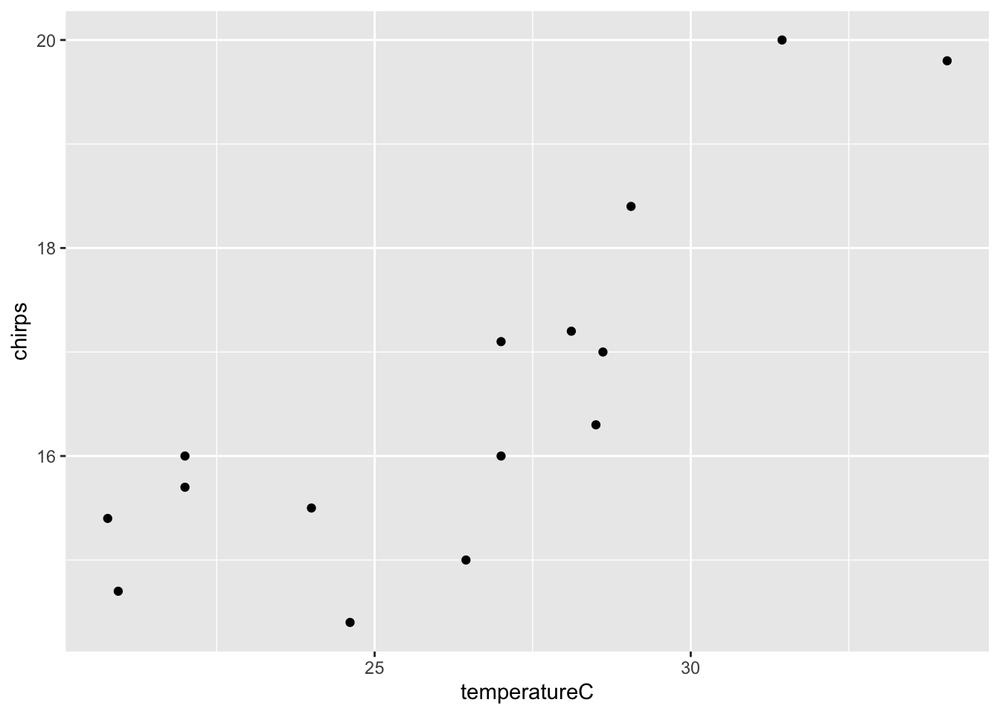
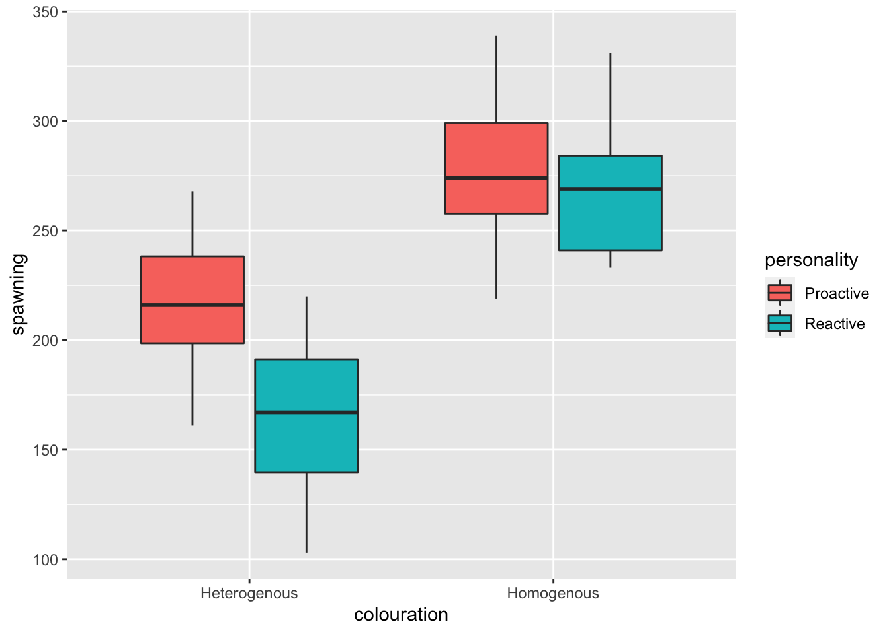

Chapter 17 Linear models with categorical and continuous explanatory variables
In the previous chapter we looked at linear models where there is a continuous response variable and two categorical explanatory variables (we call this type of linear model two-way ANOVA). In this chapter we will look at linear models where the explanatory variables are both continuous and categorical. You can think of these as a kind of cross between ANOVA and linear regression. These type of models are often given the name “ANCOVA” or Analysis of Covariance.
In a simple case, you might be interested in a model with a continuous response variable (e.g. height) and continuous and a categorical explanatory variables (e.g. hand width and gender). The categorical variable may have any number of levels, but the simplest case is with two (e.g. gender with male and female levels).
Some of these different possible outcomes of this type of analysis are illustrated in Figure 18.1. We might see that neither of the two explanatory variables has a significant effect. We might see that one of them does but not the other one. We might see an interaction effect (where the effect of one variable (e.g. hand width) depends on the other (e.g gender). We might also see an interaction effect but no main effect.
Figure 17.1: Some potential results of the experiment. There may be a significant effect (or not) of both of the main effects (diet and genotype) and there may be a significant interaction effect (or not).
17.1 The height ~ hand width example.
In a previous class (linear regression) you explored the relationship between hand width and height. The aim there was (1) to determine if the relationship (i.e. the slope) was significantly different from 0. and (2) to make an estimate of what the equation of the relationship would be so you could make predictions of height from hand width.
Here we will extend that example by asking whether there are differences between males and females. I am restricting my analysis to 2019 data, but you could do it for any year (or all years, but you might need to first get rid of some outliers using filter).
Remember to load the dplyr, magrittr and ggplot packages, and to set your working directory correctly.
We’ll begin by plotting the data (Figure 17.2).
classData <- read.csv("CourseData/classData.csv") %>%
filter(Year == 2019)
(A <- ggplot(classData, aes(
x = HandWidth, y = Height,
colour = Gender
)) +
geom_point() +
geom_smooth(method = "lm", se = FALSE))Figure 17.2: ANCOVA on hand width vs. height data in males and females
# This shows the ANCOVA model
# before we have even fit it!You can see that our two continuous variables, Height (the response variable) and HandWidth (one of the explanatory variables) are associated: There is an overall positive relationship between HandWidth and Height You can also see that Gender (the categorical explanatory variable) is important: males tend to be taller than females for any given hand width. For example, a female with hand width of 9cm is ~172cm tall while a male would be about 180cm tall. This shows us that males have a higher intercept than females. There is also a slight difference in the slope of the relationship, with males having a slightly steeper slope than females. We already know that the overall relationship between hand width and height is significant (from the linear regression chapter). These new observations leave us with the following additional questions: (1) are the intercepts for males and females significantly different? (2) are the slopes for males and females significantly different (or would a model with a single slope, but different intercepts be better)?
Now we can fit our model using the lm function. The model formula is Height ~ HandWidth + Gender + HandWidth:Gender. The HandWidth and Gender are the so called main effects while HandWidth:Gender represents the interaction between them (i.e. it is used to address the question “does the effect of hand width differ between the sexes?”). R knows that is fitting an ANCOVA type model rather than a two-way ANOVA because it knows the type of variables that it is dealing with. You can see this if you ask R to tell you what the class of the variables are:
class(classData$Gender)## [1] "character"class(classData$HandWidth)## [1] "numeric"mod_A <- lm(Height ~ HandWidth + Gender + HandWidth:Gender,
data = classData
)The first step should, as before, be to check out the diagnostic plots. We should not read to much into these in this case, because we have a small sample size. Nevertheless, lets keep with good habits:
library(ggfortify)
autoplot(mod_A)
These look good. No evidence of non-normality in the residuals, no heteroscedasticity and no weird outliers.
17.2 Summarising with anova
Now we can get the anova table of our ANCOVA model (yes, I know that sounds strange).
anova(mod_A)## Analysis of Variance Table
##
## Response: Height
## Df Sum Sq Mean Sq F value Pr(>F)
## HandWidth 1 343.86 343.86 13.3278 0.001023 **
## Gender 1 949.42 949.42 36.7985 0.000001329 ***
## HandWidth:Gender 1 77.23 77.23 2.9935 0.094229 .
## Residuals 29 748.21 25.80
## ---
## Signif. codes: 0 '***' 0.001 '**' 0.01 '*' 0.05 '.' 0.1 ' ' 1This type of sequential sum of squares Analysis of Variance table should be getting fairly familiar to you now, but let’s unpack what this means. There are four rows in the summary table - one for each of the terms in the model (HandWidth, Gender and HandWidth:Gender), and one for the Residuals (the unexplained variation that remains after fitting the model). The table includes degrees of freedom (Df), sum of squares (Sum Sq), mean sum of squares (Mean Sq) and the associated F and p-values (F value and Pr(>F).
You can interpret the mean sum of squares column in terms of the amount of variation in the response variable (Height) that is explained by the term: The table first tells us the amount of variation (in terms of Mean Sum of Squares) in Height that is captured by a model that includes a common slope for both genders (881.6). Then it tells us that an additional bit of variation (471.13) is captured if we allow the intercepts to vary with gender. Then it tells us that a small additional amount of variation is explained by allowing the slope to vary between the genders (3.65). Finally, there is a bit of unexplained variation left over (Residuals) (26.29). So you can see that hand width explains most variation, followed by gender, followed by the interaction between them.
You would report from this table something like this:
Hand width and gender both explain a significant amount of the variation in height (ANCOVA - Handwidth: F =, d.f. = 1 and , p<0.001; Gender: , d.f. = 1 and , p<0.001). The interaction effect was not significant, which means that the slopes of the relationship between hand width and height are not significantly different (ANCOVA - , d.f. = 1 and , p = .
It is of course useful to take the interpretation a bit further. You could do this with reference to the plot - e.g. Figure X shows the clear positive relationship between hand width and height and shows that the intercept for females is smaller than that for males. This which means that, for a given hand width, males tend to be taller.
17.3 The summary of coefficients (summary)
To put some quantitative numbers on this description of the pattern we need to get the summary from R.
summary(mod_A)##
## Call:
## lm(formula = Height ~ HandWidth + Gender + HandWidth:Gender,
## data = classData)
##
## Residuals:
## Min 1Q Median 3Q Max
## -9.0391 -4.0391 -0.6926 3.9288 11.4876
##
## Coefficients:
## Estimate Std. Error t value Pr(>|t|)
## (Intercept) 160.7824 5.6546 28.434 < 0.0000000000000002 ***
## HandWidth 1.0321 0.6627 1.557 0.13024
## GenderMale 27.2210 8.9576 3.039 0.00499 **
## HandWidth:GenderMale -1.6222 0.9376 -1.730 0.09423 .
## ---
## Signif. codes: 0 '***' 0.001 '**' 0.01 '*' 0.05 '.' 0.1 ' ' 1
##
## Residual standard error: 5.079 on 29 degrees of freedom
## Multiple R-squared: 0.6469, Adjusted R-squared: 0.6103
## F-statistic: 17.71 on 3 and 29 DF, p-value: 0.000001005This summary table gives the coefficients of the statistical model, their standard errors, and the t-test results of whether the estimate is greater than 0. This is the same as the summary tables given for ANOVA and linear regression.
In the ANOVA summary tables, the estimates were given in relation to the reference level – the (Intercept) and these ANCOVA summary tables are no difference. Interpreting is best done with reference to the graph of the data and fitted model outputs (the graph above).
The reference level (the (Intercept)) is the intercept for the line for the first level of the categorical variable (Females, in this case). Here the model estimates that the intercept for Females is at 160.782 (i.e. if you extended the line out to the left it would eventually cross the y-axis at this point). The next coefficient HandWidth is the slope of this Female line (1.032). Then we have GenderMale: this coefficient is the difference in intercept between the Female and Male lines. This is followed by the intercept for the interaction term HandWidth:GenderMale: this is the difference between slopes for the two genders.
We can therefore do some simple arithmetic to get the equations (i.e. slopes and intercepts) of the lines for both genders. For females this is easy (they are reference level, so you can just read the values directly from the table) - the intercept is 160.782 and the slope is 1.032.
For males the intercept is 160.782 + 27.221 = 188.003. The slope is 1.032 + -1.622 = -0.590.
We could add these equations to our reporting of the results.
Figure X shows the clear positive relationship between hand width and height and shows that the intercept for females is smaller than that for males. This which means that, for a given hand width, males tend to be taller. The model fit for males is Height = 1.75\(\times\)HandWidth + 155.27 and the fit for females is Height = 1.09\(\times\)HandWidth + 171.26
You could check these by using geom_abline to add lines with those equations to the plot (just as a “sanity check”).
A +
geom_abline(intercept = 155.27, slope = 1.75) +
geom_abline(intercept = 171.26, slope = 1.09)
At the bottom of the summary output we are given the \(R^2\) values. Because this model has several terms (i.e. variables) in it we should use the adjusted \(R^2\) values. These have been corrected for the fact that the model has extra explanatory variables. So in this case, we could report that the model explains % of variation in Height (Adjusted \(R^2\) = - not bad!
So, to describe this summary table more generally - the coefficients can be slopes, intercepts, differences between slopes, and differences between intercepts. They are slopes and intercepts for the first level of the categorical variable, and for the subsequent levels they are differences. Piecing these together can be hard to figure out without reference to the plot of the data and model fits - another good reason to plot your data!
17.4 Simplifying the model
Our results above showed that the interaction between the gender and hand width was not significant. Think about what that means? It means that the effect of hand width on height (the slope) does not depend on gender. Therefore, one can argue that we don’t need to have a model that estimates both slopes - we could have a simpler model with one slope for both genders.
In fact, creating models that are as simple as possible to explain the observations is a useful goal that is captured by the law of parsimony or “Occam’s razor,” which essentially states that simple explanations for a phenomenon are favourable to complex explanations.
Let’s refit the model without this non-significant interaction:
mod_B <- lm(Height ~ HandWidth + Gender, data = classData)
anova(mod_B)## Analysis of Variance Table
##
## Response: Height
## Df Sum Sq Mean Sq F value Pr(>F)
## HandWidth 1 343.86 343.86 12.497 0.001345 **
## Gender 1 949.42 949.42 34.506 0.000001983 ***
## Residuals 30 825.45 27.51
## ---
## Signif. codes: 0 '***' 0.001 '**' 0.01 '*' 0.05 '.' 0.1 ' ' 1Now all the terms in the model are significant.
summary(mod_B)##
## Call:
## lm(formula = Height ~ HandWidth + Gender, data = classData)
##
## Residuals:
## Min 1Q Median 3Q Max
## -11.0885 -3.2030 0.3518 4.1302 10.9086
##
## Coefficients:
## Estimate Std. Error t value Pr(>|t|)
## (Intercept) 167.5411 4.2221 39.682 < 0.0000000000000002 ***
## HandWidth 0.2216 0.4841 0.458 0.65
## GenderMale 12.1128 2.0621 5.874 0.00000198 ***
## ---
## Signif. codes: 0 '***' 0.001 '**' 0.01 '*' 0.05 '.' 0.1 ' ' 1
##
## Residual standard error: 5.245 on 30 degrees of freedom
## Multiple R-squared: 0.6104, Adjusted R-squared: 0.5844
## F-statistic: 23.5 on 2 and 30 DF, p-value: 0.0000007231The coefficient summary now gives us a two intercept estimates (152.0964 for females and 152.0964 + 2.1179 = 154.2143 for males) and single estimate for a slope that applies to both genders (2.1179).
Unfortunately, the handy geom_smooth function cannot handle this simpler model! We must take a slightly different, and sadly mode complicated approach:
What we need to do is predict using the model what the height will be under different conditions. Think of this as “plugging values into an equation.”
We want to predict heights across the range of hand widths (from 6.5cm to 11cm), and we need to do this for males and females.
We do this by creating a “fake” dataset to predict from using the useful function expand.grid. This function takes inputs from columns of data and “expands” them to ensure that all possible combinations are included.
predictData <- expand.grid(
HandWidth = c(6.5, 11),
Gender = c("Male", "Female")
)
predictData## HandWidth Gender
## 1 6.5 Male
## 2 11.0 Male
## 3 6.5 Female
## 4 11.0 FemaleNow we can use these values to predict what the heights will be for those particular combinations of values. The arguments for the predict function are the model name, then newdata = to give the function the data that you want to predict from. Here we can use the function to add the models predicted fitted value (fit) to the predictData object we just created.
predictData$Height <- predict(mod_B, newdata = predictData)
predictData## HandWidth Gender Height
## 1 6.5 Male 181.0943
## 2 11.0 Male 182.0914
## 3 6.5 Female 168.9814
## 4 11.0 Female 169.9786Now we can add lines for these predicted values to our plot. We do this using the geom_smooth function as before, but this time we use the arguments data = predictData to tell R to use the new data, and stat = "identity" and to ensure that we plot the data rather than fitting any model.
You may wish to add an error ribbon to these lines. We will cover this in a later class (but see pages 159-164 in the GSWR textbook).
ggplot(classData, aes(
x = HandWidth, y = Height,
colour = Gender
)) +
geom_point() +
geom_smooth(data = predictData, stat = "identity")
We could report this in the usual way but first saying something like: “The interaction term was not significant (F = xxxx, d.f. 1 and xx, p = XXX) and I therefore simplified the model to remove this term. The resulting model with just HandWidth and Gender …”